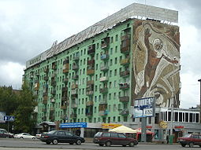

Old Town
Modern-day Karaganda dates back to 1833, when local shepherd Appak Baizhanov allegedly found coal on the site of the city, prompting a coal mining boom. By the late 19th century, the local mines had attracted workers from nearby villages, Russian merchants, and entrepreneurs from France and England. After this initial boom, the mines were abandoned, but is often still labeled on city maps as the "Old Town", but almost nothing remains on that site.
20th century
Coal mining in the area resumed in 1930, and temporary structures were built for miners and their families.The new area for the city was to the south of the initial mines. In 1931, Karaganda was incorporated as a village, and in 1934, was declared a city. Lead by planner Alexander Ivanovich Kuznetsov, masters plans for Karaganda were laid out from 1934 until 1938.
During the late 1930s, the Karlag Prison was built.During the Stalinist purges, peoples from many different nationalities, including Germans, Karachais, Kalmyks, Chechens, Ingush, Greeks, and Crimean Tatars were sent to Karlag.
Late 20th century
Kuznetsov's master plan for the city was intended to accommodate 300,000 inhabitants, which was surpassed by the late 1960s. This prompted planners to devise a new plan with the goal of accommodating 600,000 people. By the 1980s, the city's population surpassed 600,000 people, creating the need for further expansion. In 1983, the Karaganda Circus was constructed, which was criticized for its high cost.
In the early 1990s, Karaganda was briefly considered as a candidate for the capital of the (then) newly independent Republic of Kazakhstan, but its bid was turned down in favour of Astana.
